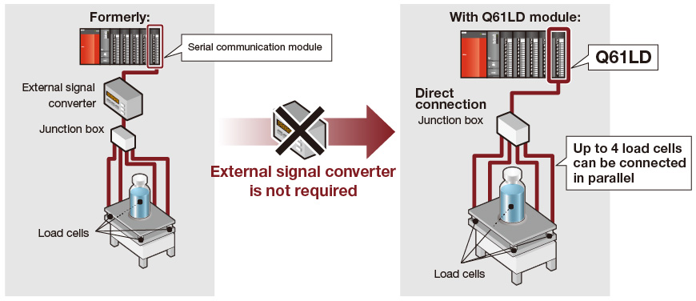
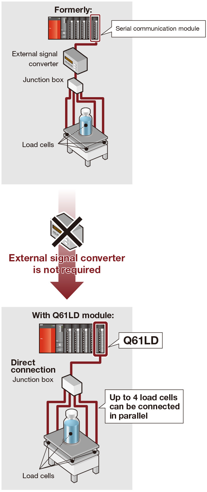
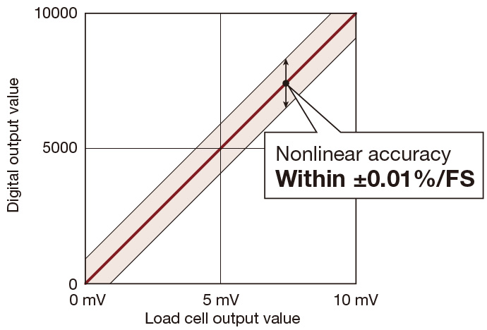
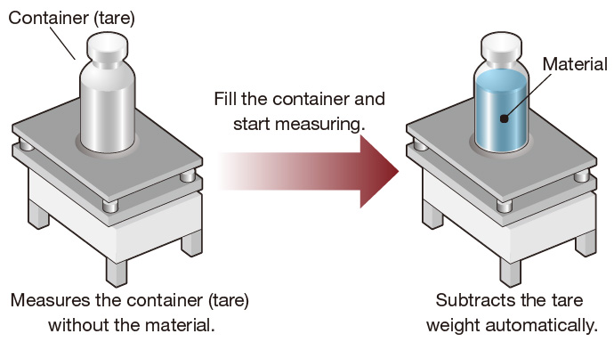
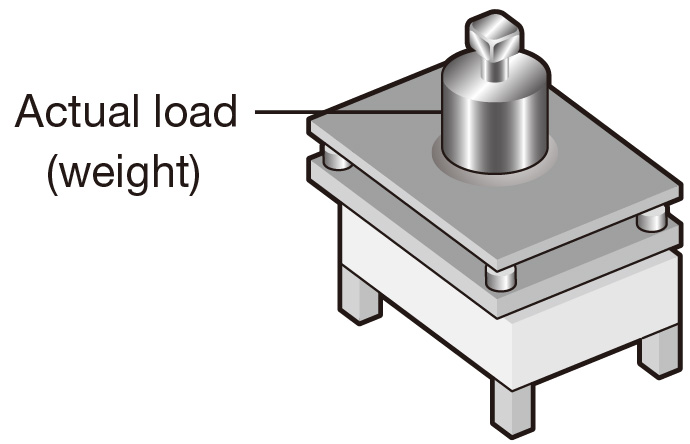
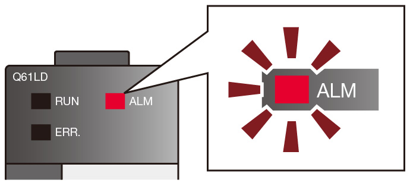

Controllers MELSEC-Q Series
Product features -Analog-

Load cell
Interface with all types of load cell with the load cell I/P module
Load cell input module
Load cells can now be directly connected to the programmable controller system without requiring an external signal converter.
The module achieves highly accurate measurement with steady data conversion speed that guarantees the accuracy of load cells.
Separate signal converter not required.
Reduce engineering costs by directly connecting a load cell to the programmable controller
- Any type of load cell*1 such as magnetostriction, capacitive, gyroscope, or strain gauge.
- 6-wire system (combination of remote sensing and ratiometric methods) or 4-wire system load cells.
- *1.Within 5 V DC of applied voltage, and 60 mA of output current. (4 units can be connected in parallel with 350 Ω type load cells)

- Applications requiring high accuracy can be achieved by connecting the load cell directly to the programmable controller.
- Nonlinear accuracy: Within ±0.01%/FS
- Zero drift: Within ±0.25 µV/°C RTI
- Gain drift: Within ±15 ppm/°C
- (Load cell rated output is 2 mV/V, ambient temperature is 25°C, and the tare weight subtraction function is not used.)

Zero offset function
This function subtracts the tare weight automatically relative to the load cell usage range when calibrating measuring instruments.
Using this function can improve the accuracy of the measuring instrument.

Static load calibration function
The gross weight value can be accurately calibrated by applying the actual load (weight) onto the load cell.

Input signal error detection function
Load cell input signal errors can be detected.
- Input signal error
- Weight capacity over error
- Zero point out of range
- Exceed conversion error

Lineup
| Number of channels | Channel isolated | Load cell |
|---|---|---|
| 1 | ● | Q61LD |